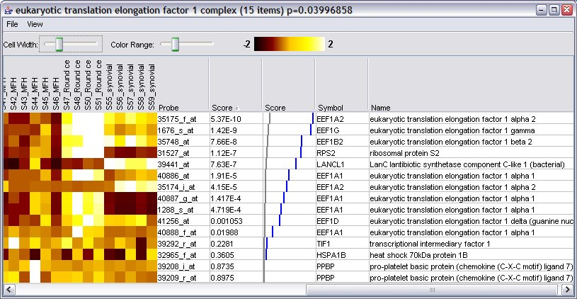
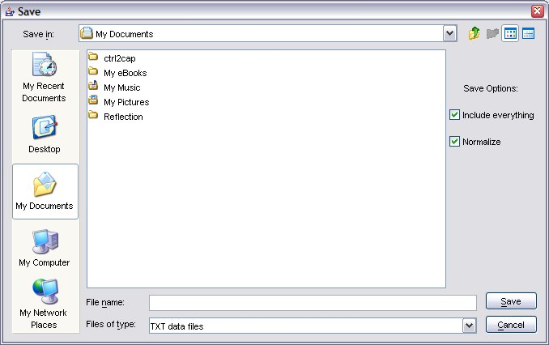

Exploring gene set details
From the Output Panel, you can double-click on a gene set row to
pop up a new window showing the details for the gene set.
If you have loaded your raw expression data, this will include a
visualization of the data. A typical window will look like this

The non-data columns are as follows:
-
Probe - the identifier supplied by the array manufacturer,
read in from the
annotation file. In this
example, this is an Affymetrix array.
-
-
Score (visual) - a graph showing the scores graphically. The
blue line represents the scores. The grey line shows the
expected distribution under the null hypothesis and assuming
independence (this only works if the values are p
values).
-
Symbol - the official gene symbol as supplied in the
annotation file.
-
Name - the gene name as supplied in the annotation file.
Image controls
-
Clicking on any column (including the raw data column)
headers result in sorting.
-
You can adjust the color range (contrast) and cell width for
the color map.
-
Resize the columns in the image view. Use this to "zoom out"
to make the image fit horizontally on your screen.
-
Using the "View" menu, you can switch between different
preset color maps and choose normalize or non-normalized data
for viewing.
Saving
Using the "File" menu, you can save the data shown, in text or
image formats:

Here is an example of the resulting image, which is in PNG
format:

You can also save the data using the "File...Save data..." menu
option:

The resulting file for the data above is here.